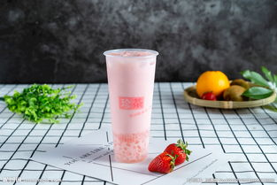
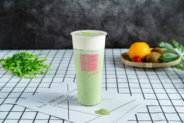
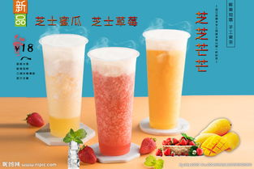
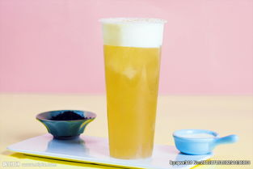

草莓奶昔奶盖
- 准备好红润大颗粒的草莓君，装一碗清水，撒一咪咪食用盐，放入草莓君泡5分钟。随后用流动水一颗颗冲洗干净。
- 草莓去蒂，对半切开。
- 将草莓榨成汁，倒入牛奶，喜欢浓稠口感的少加一点，喜欢稀释口感的多加一些。

抹茶奶盖
- 将抹茶粉放入调酒杯，加250ml热水搅拌均匀。
- 加入适量的冰块，摇匀（我做的是冰饮，如果要做热饮直接加热水就行，不用加冰块）。
- 倒入杯中，加入打发好的淡奶油，淋上巧克力酱，撒上糖针，就可以了。

芝士奶盖
- 将芝士放进牛奶里隔热搅拌，直至没有颗粒；
- 芝士完全融化后没有颗粒，这个时候的状态就有一点淡奶油没打发之前那种稠度。
- 等牛奶芝士液变常温后，加入淡奶油，糖，盐，炼乳，搅拌打发。
- 然后随便放在奶茶、咖啡、果汁、茶上都可以。

乌龙奶盖
- 烧壶开水泡茶，第一次冲泡茶叶之后茶水马上倒掉，第二次冲泡后倒入两个杯子，注意只是冲泡后的茶水，茶叶不要一直泡在水中。放一边晾凉或者冰镇一下。
- 打发奶油，持续快速沿同一方向搅动。打发到一半程度的时候按自己口味加糖和盐，然后继续搅动可以换一个方向，打发到粘稠无气泡状。
- 把打发好的奶盖用大的勺子撑起盖到乌龙茶上，小勺子倒进去会很快溶化奶盖因为茶水可能还比较温热。